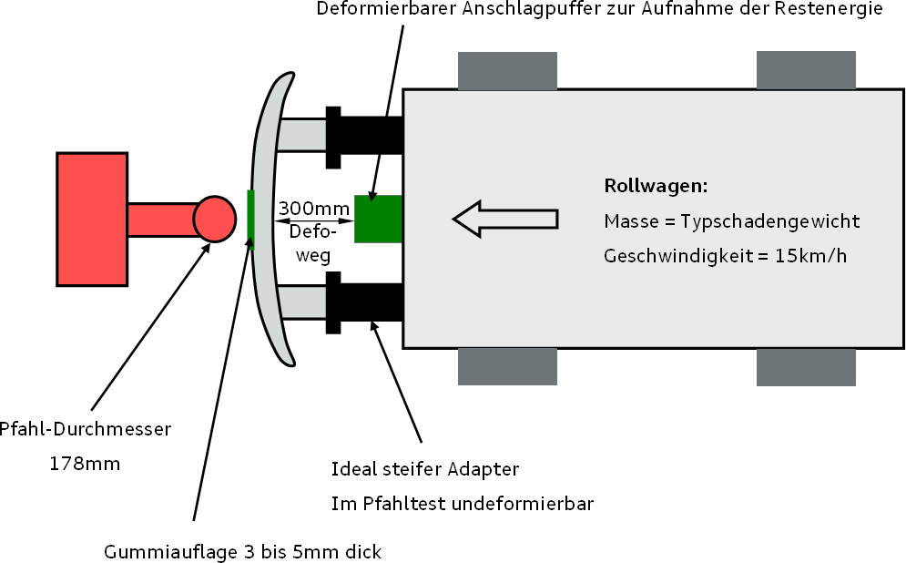

[redacted-person] Stoßfängersystem
LAH [redacted-phone]A
Verteiler:
|
|
|---|---|
|
[redacted-person] |
|
[redacted-person] |
|
[redacted-person] |
Abstimmung
Inhaltsverzeichnis
Zielsetzung 5[redacted-person] Fahrzeugsicherheit 5Allgemeines 5Funktionsanforderungen 5[redacted-person] 6Komponentenerprobung 6Fahrzeugerprobung 11[redacted-person] 11
Änderungsdokumentation
Vorwort
Das vorliegende LAH dient zur Ergänzung des Bauteil-Lastenheftes der Konstruktion und legt die technischen Daten und Randbedingungen für das Stoßfängersystem bezüglich den Anforderungen der Fahrzeugsicherheit (Crashverhalten) fest.
[redacted-person] der Entwicklung ist der Schutz der Insassen im Falle eines Crashs. [redacted-person] muss dazu beitragen, dass sämtliche internen Anforderungen und alle gesetzlichen Vorschriften vom Gesamtfahrzeug erfüllt werden. [redacted-person] ist das Bestehen von Verbrauchertests „in best class“, sowie Benchmark-Vergleiche während des gesamten Herstellzeitraumes des Fahrzeuges.
[redacted](CMS) dient zur Einleitung und Verteilung der Kräfte in die Fahrzeugstruktur.
[redacted-person] sind hinsichtlich der Crashfunktionen (Deformation, Freigang, Blockbildung, Beschleunigung, ...) im Gesamtfahrzeug zu entwickeln. Es gelten die Anforderungen gemäß [redacted-person], TPB allgemeiner Teil und [redacted]
Dabei müssen insbesondere nachfolgende Punkte berücksichtigt werden:
[redacted-person], Stoßfänger – Deformationselement – Längsträger muss bei allen gemäß [redacted]aufgeführten Versuchen, erhalten bleiben, d.[redacted-person] Stoßfängerquerträger und die Anbindung über das Deformationselement zum Längsträger soll nicht abreißen und muss seinen Beitrag zur homogenen Kraftverteilung in der Fahrzeugstruktur leisten.
Abrisse im CMS System sind zu vermeiden. Sollte im Crash ein Abriss vom Stoßfängerquerträger oder Defobox mit dem Längsträger geschehen, ist es mit der Fahrzeugsicherheit zu bewerten. Pauschal , kann ein Versagen zugelassen werden wenn:
[redacted-person] vom CMS vollständig ist.
Das CMS Versage hat keine negativen Einflüsse auf den Insassen bzw. Erfüllung der Anforderungen (Verbraucherschutz ,Gesetz, HV-Sicherheit, Kraftstoffdichtigkeit).
[redacted-person] sind erfühlt.
[redacted-person] des Deformationsverhaltens von Längsträger und Deformationselement ist vor Konzeptfestlegung mit der Fahrzeugsicherheit abzustimmen. [redacted-person] des schnellen Crashs gemäß [redacted-person], TPB allgemeiner Teil und [redacted]dürfen nicht negativ beeinflusst werden.
Bezogen auf TL 815 muss das Deformationsverhalten reversibler Pralldämpfer bei höheren Kollisionsgeschwindigkeiten sichergestellt werden. (Durch nachgeschaltete mechanische Kraftbegrenzer o.ä.)
[redacted-person] ist so auszulegen, dass ein Verhaken beim Fahrzeug/Fahrzeug-Crash, speziell in der Seitenstruktur minimiert wird (Beispiel, siehe Bild 2).
Bild 2
Eine groß- und geradflächige Vorderseite des CMS-Querträgers im [redacted-person] Crashelement ist erforderlich. Die projizierte Aufprallfläche in diesem Bereich muss mindestens 110 mm Bauhöhe aufweisen. Im Bereich zwischen den Crashelementen sowie von Crashelement zu Trägeraußenkante kann die Querträgerhöhe eingeschränkt sein. [redacted-person] erfolgt dann in Abstimmung mit der Fahrzeugsicherheit und der Fachabteilung. Verprägungen und Öffnungen für Schrauberfreigänge sind ebenfalls abzustimmen.
Die im Crash auftretenden Kräfte über das CMS müssen axial in den Längsträger eingeleitet werden. [redacted-person] zwischen CMS und Längsträger muss mit der Fahrzeugsicherheit und der Fachabteilung abgestimmt werden.
Für SUV sind die Anforderungen für die [redacted-person] gemäß [redacted-person] LAH [redacted-phone]B zu beachten.
Vor einer Anlieferung und Abprüfung im Gesamtfahrzeug muss das Crashverhalten des Stoßfängersystems in den Einzelteilversuchen beim Auftragnehmer auf die Anforderung überprüft werden und i.[redacted-person].
Für die Komponentenerprobungen der Fahrzeugsicherheit muss das AZT-Kraftniveau auf das jeweilige Fahrzeug abgestimmt sein, damit ein optimales Deformationsverhalten zwischen CMS und Längsträger gewährleistet ist.
Die folgenden Komponententests gelten für das CMS vorn:
Pfahl – [redacted-person]
[redacted-person] ist ein Ersatzlastfall, welcher nicht in vollem Umfang die Performance im Gesamtfahrzeug sicherstellt, jedoch dessen [redacted-person] für die Durchführung eines Crashtests ist.
Ziel des Pfahltest ist vor allem die Erprobung der Verbindungstechnik zwischen Crashelement und Längsträger sowie zwischen Crashelement und Querträger. [redacted-person] wird eine Mindestbiegesteifigkeit des CMS, dessen Beitrag zur Energieaufnahme im schnellen Crash sowie der Querverbund bei hohem Umformungsgrad getestet.
Versuchsaufbau:
[redacted-person] wird inkl. Deformationselemente entsprechend der Serienbedingungen auf zwei ideal steife, im Pfahl-Test undeformierbare Adapter von 300mm Länge und einer Aufschraubfläche, die mindestens der Größe der längsträgerseitigen Schottplatte entspricht, vor einem Rollbock aufgeschraubt.
[redacted-person] hat jeweils das leichteste Fahrzeugleergewicht und kann schienengeführt sein.
[redacted-person] hat einen Durchmesser von 178mm. [redacted-person] muss 15 km/h betragen. [redacted-person] muss mittig am Querträger sein. Im Aufschlagbereich wird der Stoßfängerträger mit einer Gummiauflage (ca. 3-5 mm dick) abgedeckt. Nach einem Verzögerungsweg (Deformationsweg CMS-Querträger) von 300mm kann ein Anschlag am Rollbock vorgesehen werden. Kraft-Weg-Diagramm und ggf. Highspeed- Filmaufnahmen werden aufgezeichnet.

Abbildung 1: Versuchsaufbau
[redacted-person] muss im ersten Kraftanstieg mindestens 30kN betragen.
Das CMS darf bis zum Verzögerungsweg des Rollbockes von 300mm nicht durchreißen. Risse im CMS bis zu 250mm müssen mit der [redacted-person] diskutiert werden. [redacted-person] darf nicht zu einem Kollaps im CMS führen (massiver Krafteinbruch, siehe Skizze unten).
[redacted-person] der Deformationsenergie im Gesamtfahrzeug muss das CMS im Pfahltest mindestens 5,5kJ innerhalb von 300mm absorbieren.
Im Abstimmprozess ist die Fachabteilung mit einzubeziehen.
Abbildung 2: Beispiel einer Kraft-Weg-Kurve und deren Interpretation
Langsamer ODB Rollbockversuch
Ziel des Komponententests ist die Vorprüfung des Verhaltens gegen die deformierbare EEVC-Barriere. Hierbei wird besonders die Belastung des Crashelementes sowie des Querträgers im Bereich der Anbindung zum Crashelement getestet.
[redacted-person] incl. Längsträgerabschnitten, Frontendmodul, Stoßfängerüberzug und Energiemanagementsystem (Änderungen des Vorbaus sind mit der Fahrzeugsicherheit abzustimmen) wird vorne an einem Rollbock mittels der Schraubpunkte aufgebaut. Gegebenenfalls ist eine prinzipartige Abstützung des Längsträgers durch den Hilfsrahmen erforderlich.
Die ODB EEVC Barriere wird vor einer Kraftmesswand 200 mm über Boden mit 40% Überdeckung zum Rollbock (fahrzeugspezifischer Wert) aufgebaut. [redacted-person] (Stoßfänger über Boden) ist mit der Fahrzeugsicherheit abzustimmen. [redacted-person] wird im ersten Ansatz mit einer Geschwindigkeit von 40 km/h und dem leichtesten Fahrzeuggewicht (siehe Pfahltest) gefahren. Abhängig vom Deformationsverhalten müssen Masse und Geschwindigkeit angepasst werden. Kraft-Weg-Diagramm und ggf. Highspeed-Filmaufnahmen werden aufgezeichnet.
Hierbei wird das Deformationsverhalten an der EEVC Barriere beurteilt. Anforderung:
[redacted-person] des Energiemanagementsystems an der ODB Barriere. [redacted-person] darf des weiteren nicht abreißen. [redacted-person] sind einzeln mit der Fahrzeugsicherheit zu bewerten.
Langsamer FWDB Rollbockversuch
Kann optional von der Fahrzeugsicherheit oder der Fachabteilung gefordert werden. [redacted-person] wird während des Projektes festgelegt.
[redacted-person] incl. Längsträgerabschnitten, Frontendmodul, Stoßfängerüberzug und Energiemanagementsystem (Änderungen des Vorbaus sind mit der Fahrzeugsicherheit abzustimmen) wird vorne an einem Rollbock mittels der Schraubpunkte aufgebaut. Gegebenenfalls ist eine prinzipartige Abstützung des Längsträgers durch den Hilfsrahmen erforderlich.
Die FWDB Barriere ([redacted]150 mm 0,34 MPa, [redacted-person] 150 mm 1,71 MPa) wird vor einer Kraftmesswand 80 mm über Boden aufgebaut. [redacted-person] (Stoßfänger über Boden) ist mit der Fahrzeugsicherheit abzustimmen. [redacted-person] wird im ersten Ansatz mit einer Geschwindigkeit von 30 km/h und dem leichtesten Fahrzeuggewicht (siehe Pfahltest) gefahren. Abhängig vom Deformationsverhalten müssen Masse und Geschwindigkeit angepasst werden. Kraft- Weg-Diagramm und ggf. Highspeed-Filmaufnahmen werden aufgezeichnet.
Hierbei wird das Deformationsverhalten an der EEVC Barriere beurteilt. Ziel:
[redacted-person] des Energiemanagementsystems an der Barriere. [redacted-person] darf nicht abreißen. [redacted-person] sind einzeln mit der Fahrzeugsicherheit zu bewerten.
Langsamer 30° Schräg-Versuch
Kann optional von der Fahrzeugsicherheit oder der Fachabteilung gefordert werden, z.[redacted-person] Versagen im Pfahltest oder wenn es das Konzept erfordert. [redacted-person] wird während des Projektes festgelegt.
[redacted-person] incl. Längsträgerabschnitten und Energiemanagementsystem (Änderungen des Vorbaus sind mit der Fahrzeugsicherheit abzustimmen) wird vorne an einem Rollbock mittels der Schraubpunkte aufgebaut.
[redacted-person] wird mit einer Geschwindigkeit und einer Masse gegen eine 30°-Barriere gefahren, die sich aus der AZT-Energie (jeweils leichteste Fahrzeugvariante mit 16 km/h) ergibt. Kraft-Weg-Diagramm und Highspeed-Filmaufnahmen werden aufgezeichnet.
[redacted-person] der Holzplatte erfolgt nach FMVSS 208. Ziel:
Entwicklungsziel ist das Einfahren der Deformationselemente bei Kollision gegen eine 30°-Barriere. [redacted-person] muss ein homogenes Deformationsverhalten zeigen. [redacted-person] bzw. scharfkantige Stellen sind mit der Fahrzeugsicherheit zu bewerten.
Fallbeiltest gemäß VW-Richtlinie (EP [redacted-phone])
Kann optional von der Fahrzeugsicherheit oder der Fachabteilung gefordert werden, z.[redacted-person] Versagen im ODB Rollbockversuch oder wenn es das Konzept erfordert. [redacted-person] wird während des Projektes festgelegt.
Ziel:
Dabei darf der Stoßfängerträger nicht abgeschert werden. Er darf des weiteren nicht abreißen. [redacted-person] sind einzeln mit der Fahrzeugsicherheit zu bewerten.
[redacted-person] aus allen Versuchen sind mit der Fahrzeugsicherheit und der Fachabteilung zu bewerten.
[redacted-person] sind ein Hilfsmittel zur Auslegung des Bauteils. [redacted-person] erfolgt nach positiver Gesamtfahrzeugerprobung.
[redacted-person]-Verhalten des Gesamtfahrzeugs wird bei [redacted-co] anhand von FE-Simulationen und durch Gesamtfahrzeug-Crashversuche beurteilt. Zeigt sich, dass die Ziele nicht erreicht werden, sind Optimierungen am Stoßfängersystem in Zusammenarbeit mit den Fachabteilungen durchzuführen.
[redacted-person] für das jeweilige Fahrzeugprojekt
LAH [redacted-phone]J [redacted-person] Fahrzeugsicherheit
LAH [redacted-phone]B [redacted-person]
- EP [redacted-phone]
- TL 815
[redacted]für das jeweilige Fahrzeugprojekt